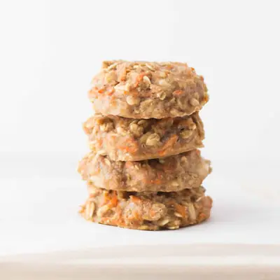

3 Ingredient Baby Cookies

Ingredients
- 1 cup (100g) rolled oats total - 1/2 cup (50g) ground into flour, and 1/2 cup (50g) stir in to the batter
- 1 cup (240g) ripe banana, about 2 medium banana
- 1/2 teaspoon cinnamon
- 1/4 cup smooth peanut butter, natural-style (OR)
- 1/2 cup (48g) grated carrots
- 1 tablespoons finely chopped walnuts
- 1/2 teaspoon vanilla extract
Steps
- Preheat oven to 350 degrees Fahrenheit. Prepare a cookie sheet by either lining with parchment paper or lightly greasing it. Set aside.
- Add 1/2 cup of rolled oats to a food processor or blender and blend into a flour. You can also use oat flour if you have it.
- In a large bowl, combine all the ingredients.
- Scoop the batter using a large spoon and transfer to prepared cookie sheet. They won't change shape during cooking so be sure to form into the shape you want them. You'll end up with 8-9 cookies.
- Bake for 10-12 minutes. Remove from oven and cool on a wire rack.
Recipe by Min Kwon · Kidfriendly Meals, from MJ and Hungryman. Saved here for personal use; the original has the full notes, tips and photos. Open original